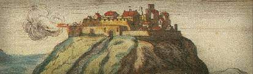

Védett: Világörökség
 1972. november 16-án született meg az UNESCO Világörökség Egyezménye. Megalkotásának közvetlen kiváltó oka az asszuáni gát (Egyiptom), pontosabban víztározó építése miatt víz alá kerülő ókori építészeti alkotások sorsa feletti aggodalom volt. Világossá vált, hogy az egy-egy ország területén található kiemelkedő jelentőségűek és együtteseik, a természeti tájak az egész emberiség számára egyetemes jelentőséggel bírnak; kell tehát valamilyen eszköz arra, hogy megóvásuk, fennmaradásuk érdekében ne csak a tulajdonos állam, hanem mások is tehessenek, mégpedig legális és szervezett keretek között. A Világörökség Egyezmény a valamilyen módon veszélyeztetett helyzetbe kerülő kiemelkedő értékek iránti közös felelősség és együttműködés kifejeződése.
1972. november 16-án született meg az UNESCO Világörökség Egyezménye. Megalkotásának közvetlen kiváltó oka az asszuáni gát (Egyiptom), pontosabban víztározó építése miatt víz alá kerülő ókori építészeti alkotások sorsa feletti aggodalom volt. Világossá vált, hogy az egy-egy ország területén található kiemelkedő jelentőségűek és együtteseik, a természeti tájak az egész emberiség számára egyetemes jelentőséggel bírnak; kell tehát valamilyen eszköz arra, hogy megóvásuk, fennmaradásuk érdekében ne csak a tulajdonos állam, hanem mások is tehessenek, mégpedig legális és szervezett keretek között. A Világörökség Egyezmény a valamilyen módon veszélyeztetett helyzetbe kerülő kiemelkedő értékek iránti közös felelősség és együttműködés kifejeződése.
Magyar helyszínek
Magyarország 1985-ben csatlakozott a Világörökség Egyezményhez és törvényerejű rendelet formájában beépítette azt a magyar jogrendbe. A Világörökség Bizottság két évvel később, 1987-ben döntött az első két magyarországi helyszín, Budapest és Hollókő felvételéről a Világörökségi Listára. 2002 nyarától hazánk már nyolc világörökségi helyszínnel büszkélkedhet.
- Budapest Duna-parti látképe, a Budai Várnegyed, az Andrássy út és történelmi környezete (1987)
- Hollókő ófalu és táji környezete (1987)
- Az Aggteleki-karszt és a Szlovák-karszt barlangjai (1995)
- Az Ezeréves Pannonhalmi Bencés Főapátság és közvetlen természeti környezete (1996)
- Hortobágyi Nemzeti Park – Puszta (1999)
- Pécsi ókeresztény sírkamrák (2000)
- Fertő / Neusiedlersee kultúrtáj (2001)
- A tokaji történelmi borvidék (2002)
A Magyar Várományosi Listán szereplő helyszínek
A Világörökség Magyar Nemzeti Bizottsága dönt arról, hogy a hozzá beérkezett javaslatok alapján mely helyszíneket tartja esélyesnek és érdemesnek egy valamikori felvételre a Világörökségi Listára. E helyszínek szerepelnek az ún. Magyar Várományosi Listán.
- Tarnóc ősélőhely (Természeti) 2003-ban felterjesztve, felvételéről a döntés egyelőre elhalasztva (eredeti név: Ipolytarnóc – ősmaradványok)
- A Komárom / Komarnoi erődrendszer (Kulturális) szlovák-magyar közös felterjesztés
- A Visegrádi középkori királyi központ és vadászterület
- Esztergom középkori vára
- A rózsadombi termálkarszt területe (Természeti) a meglévő budapesti világörökségi helyszín kiterjesztéseként kerül majd felterjesztésre
- Lechner Ödön független, premodern építészt (Kulturális)
- A Tihanyi-félsziget, a Tapolcai-medence tanúhegyei és a Hévízi-tó (Kultúrtáj) a helyszín lehatárolása és kategóriája 2003-tól megváltozott, mivel két, közeli helyszínt csatoltak hozzá
- A római limes magyarországi szakasza (Kulturális) nemzetközi sorozatjelölés részeként
- Mezőhegyesi Állami Ménesbirtok (Kulturális – kultúrtáj)
- Tájház hálózat Magyarországon (Kulturális) később átsorolásra kerülhet a “Szellemi örökség” (intangible heritage) Egyezmény körébe
- Az északkeleti Kárpát-medence fatemplomai (Kulturális) tervezett szlovák-magyar (-lengyel?) felterjesztés

A Visegrádi vár
Szavazzon!